08-jenkins发布Java项目
1.java项目是什么(springboot)
由java语言开发的后端，就是java项目
前面于超老师教了大家学习了
wordpress---php项目部署，提供LNMP，交给php-fpm进程去解释执行该源码
jumpserver的core后端---python项目，提供python3环境，即可运行
golang程序，需要安装golan编译器，编译二进制命令行，即可运行。
java项目，提供java开发环境，且进行编译后，方可运行，今天开始学这个。
简单理解java的源代码，好比一堆零散的零件（文件），通过编译，打包之后，成为一个整体小汽车（java代码包），然后就可以基于这个代码包运行java进程了。
springboot是java开发中的一个框架，用于写后端接口，用于写web后端的。
本文将带你玩转基于java后端的高级devops流水线项目，真刀真枪玩转项目
1.1 java项目的部署方式
目前市场上，部署java web的方式，主要有俩方案
1. 开发交付给运维的是一个（*.war） zip类型的压缩包，这个压缩包里包含了网站的thml，配置文件，以及java代码，运维只需要提供应用容器（tomcat）即可发布这个java网站。（集团型的中大型公司，用该方案）
2. 目前互联网公司以devops开发模式，快速迭代模型，并且java后端诞生spring Boot框架，最终开发交付的产物是（*.jar）也是zip类型的压缩包，且springboot该框架内置了应用容器（tomcat），最终运维只需要（jar -jar *.jar）即可运行java网站
1.2 war和jar部署区别
1. 运维拿到了war包，需要安装tomcat，将war包放入tomcat的webapps目录，该压缩包自动解压缩，然后即可访问
2.运维拿到了jar包，无须自己部署tomcat，直接jar -jar *.jar运行项目进程即可
3. 运维需要自己打包java源码，生成jar包
- 进入项目根目录，执行maven打包命令,maven命令是java项目的编译打包工具
- maven命令自动读取pom.xml配置文件，安装依赖关系
- 在项目根目录下执行命令：mvn clean install，会在项目根目录的target目录下生成一个jar文件
- 接着输入命令：java -jar target\springboot-0.0.1-SNAPSHOT.jar
测试部署仓库
git clone https://gitee.com/yuco/springboot-test.git
2.项目架构
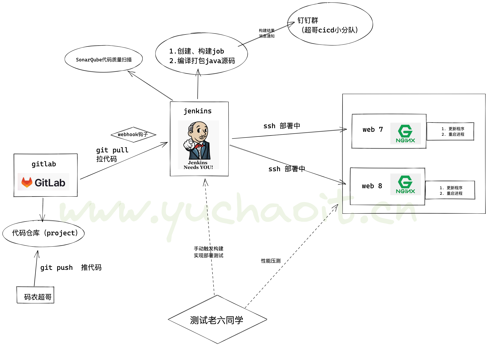
该架构方案是
1. 码农超哥 git push 更新代码 ，提交到gitlab，即可自动触发jenkins任务构建，实现自动发版
1.1 基于jenkins打包java项目后，配置ssh插件，上传到指定服务器，然后执行shell脚本，实现项目重启，结果通知到钉钉群
2. 测试可以通过jenkins手动实现项目构建，项目测试发布，性能压测。
3.构建服务器环境检查
3.1 java环境
1.以jenkins-100的机器，为统一部署服务器（jenkins + sonarqube），并且需要构建java项目，也必须得检查java环境
[root@jenkins-100 ~]#java -version
openjdk version "1.8.0_332"
OpenJDK Runtime Environment (build 1.8.0_332-b09)
OpenJDK 64-Bit Server VM (build 25.332-b09, mixed mode)
3.2 maven环境
以下作为博客，看看了解即可，java开发的知识
在了解Maven之前，我们先来看看一个Java项目需要的东西。首先，我们需要确定引入哪些依赖包。例如，如果我们需要用到commons logging，我们就必须把commons logging的jar包放入classpath。如果我们还需要log4j，就需要把log4j相关的jar包都放到classpath中。这些就是依赖包的管理。
其次，我们要确定项目的目录结构。例如，src目录存放Java源码，resources目录存放配置文件，bin目录存放编译生成的.class文件。
此外，我们还需要配置环境，例如JDK的版本，编译打包的流程，当前代码的版本号。
最后，除了使用Eclipse这样的IDE进行编译外，我们还必须能通过命令行工具进行编译，才能够让项目在一个独立的服务器上编译、测试、部署。
这些工作难度不大，但是非常琐碎且耗时。如果每一个项目都自己搞一套配置，肯定会一团糟。我们需要的是一个标准化的Java项目管理和构建工具。
Maven就是是专门为Java项目打造的管理和构建工具，它的主要功能有：
提供了一套标准化的项目结构；
提供了一套标准化的构建流程（编译，测试，打包，发布……）；
提供了一套依赖管理机制。
Maven项目结构
一个使用Maven管理的普通的Java项目，它的目录结构默认如下：
a-maven-project
├── pom.xml
├── src
│ ├── main
│ │ ├── java
│ │ └── resources
│ └── test
│ ├── java
│ └── resources
└── target
当然这些不用大家管，于超老师会准备好一个java项目源码，基于主流的springboot项目，作为运维，了解环境搭建即可。
运维、开发、分工还是很明确的。
部署maven
安装jdk
[root@jenkins-100 ~]#java -version
openjdk version "1.8.0_332"
OpenJDK Runtime Environment (build 1.8.0_332-b09)
OpenJDK 64-Bit Server VM (build 25.332-b09, mixed mode)
安装maven
1.清华镜像站
https://mirrors.tuna.tsinghua.edu.cn/apache/maven/
2.下载maven
wget https://mirrors.tuna.tsinghua.edu.cn/apache/maven/maven-3/3.3.9/binaries/apache-maven-3.3.9-bin.tar.gz
[root@jenkins-100 /opt]#ll apache-maven-3.3.9-bin.tar.gz
-rw-r--r-- 1 root root 8491533 Jul 13 17:46 apache-maven-3.3.9-bin.tar.gz
3.解压，安装，检查环境变量
[root@jenkins-100 /opt]#tar -xf apache-maven-3.3.9-bin.tar.gz
[root@jenkins-100 /opt]#ln -s /opt/apache-maven-3.3.9 /usr/local/maven
echo 'export PATH=/usr/local/maven/bin:$PATH' >> /etc/profile
source /etc/profile
4.测试maven命令
[root@jenkins-100 /opt]#mvn -v
Apache Maven 3.3.9 (bb52d8502b132ec0a5a3f4c09453c07478323dc5; 2015-11-11T00:41:47+08:00)
Maven home: /usr/local/maven
Java version: 1.8.0_181, vendor: Oracle Corporation
Java home: /usr/java/jdk1.8.0_181-amd64/jre
Default locale: en_US, platform encoding: UTF-8
OS name: "linux", version: "3.10.0-862.el7.x86_64", arch: "amd64", family: "unix"
5.maven会自动下载处理java项目的依赖包，因此更换为国内源
[root@jenkins-100 /opt]#cd /usr/local/maven/conf/
[root@jenkins-100 /usr/local/maven/conf]#
修改settings.xml，添加mirror节点即可
<mirrors>
<!-- mirror
| Specifies a repository mirror site to use instead of a given repository. The repository that
| this mirror serves has an ID that matches the mirrorOf element of this mirror. IDs are used
| for inheritance and direct lookup purposes, and must be unique across the set of mirrors.
|
<mirror>
<id>mirrorId</id>
<mirrorOf>repositoryId</mirrorOf>
<name>Human Readable Name for this Mirror.</name>
<url>http://my.repository.com/repo/path</url>
</mirror>
-->
<!-- 阿里云仓库 -->
<mirror>
<id>alimaven</id>
<mirrorOf>central</mirrorOf>
<name>aliyun maven</name>
<url>http://maven.aliyun.com/nexus/content/repositories/central/</url>
</mirror>
</mirrors>
6.再次检查maven
[root@jenkins-100 /usr/local/maven/conf]#mvn -version
Apache Maven 3.3.9 (bb52d8502b132ec0a5a3f4c09453c07478323dc5; 2015-11-11T00:41:47+08:00)
Maven home: /usr/local/maven
Java version: 1.8.0_181, vendor: Oracle Corporation
Java home: /usr/java/jdk1.8.0_181-amd64/jre
Default locale: en_US, platform encoding: UTF-8
OS name: "linux", version: "3.10.0-862.el7.x86_64", arch: "amd64", family: "unix"
3.3 jenkins检查
确保你的jenkins装好了maven插件
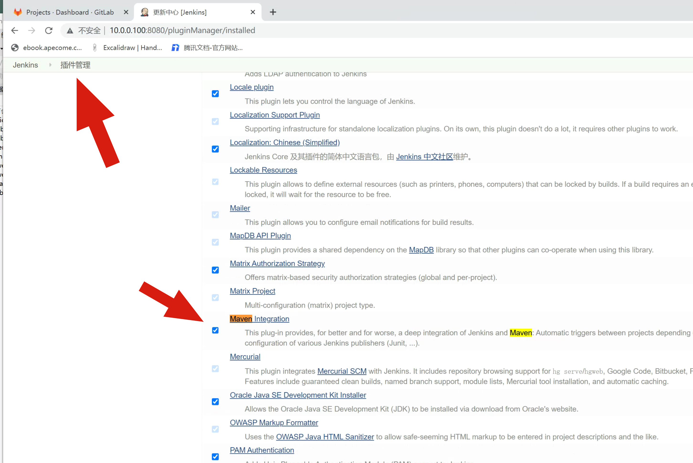
有很多插件默认就已经安装了，需要我们安装的并不多。
需要安装插件如下：
Git plugin
Maven Integration plugin
Publish Over SSH
DingTalk Plugin
从系统管理>插件管理>可选插件>搜索插件>勾选安装，点击直接安装即可
检查这几个插件是不是都有
https://mirrors.tuna.tsinghua.edu.cn/jenkins/plugins/publish-over-ssh/1.19/publish-over-ssh.hpi
这个ssh插件，版本问题直接下载不了，下载低版本然后导入即可
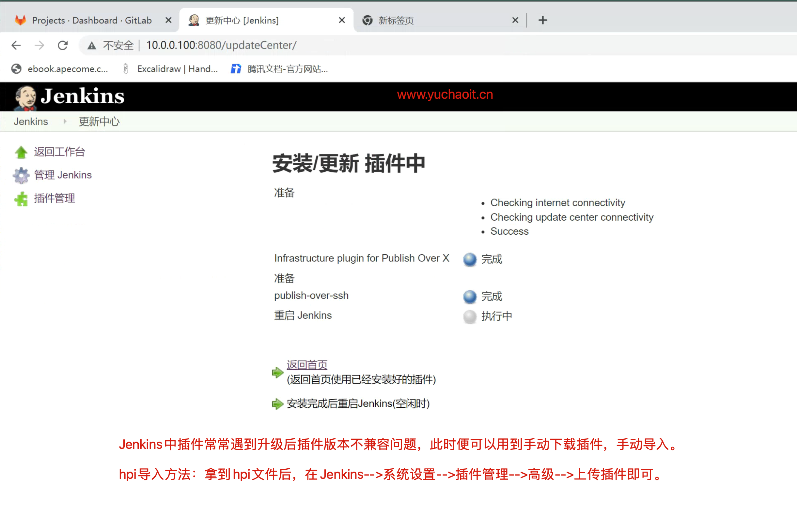
3.4 配置jenkins支持maven
配置jdk
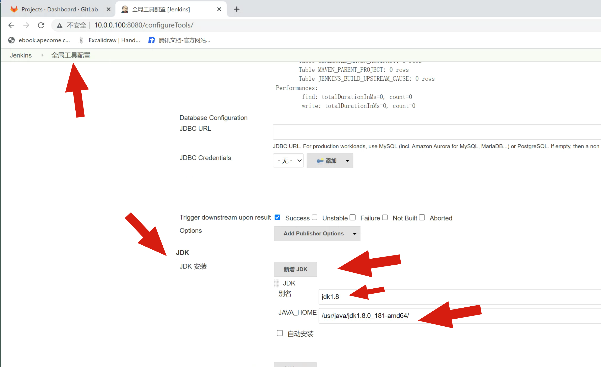
配置maven
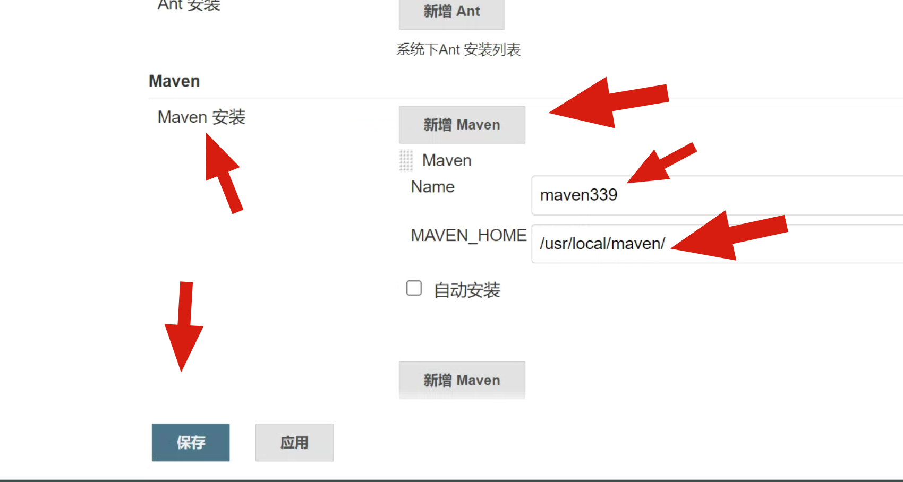
具体要根据你公司的环境安装即可
3.5 配置ssh
下一步就是要确保架构中的，jenkins机器，和目标机器实现ssh免密操作。
[root@jenkins-100 ~]#cat ~/.ssh/id_rsa.pub
ssh-rsa AAAAB3NzaC1yc2EAAAADAQABAAABAQDA9C597NnGpdyRYkDtF4zQmTa+bRxXqll3XX7LJDjLfsgfUZbfolj0KwkmdIvpQjecDrKff33bOIhGQQ64okmQlKPyp+iISO6sRCH1p2VhZNFEWOeBRtzA+TFrLX4WeVFJFg2IuOE1cFuKGESBC7pqZZf4H12QaNCunLwWLTrqoUGvfW0+rXOBGaXPW1yNpTMevnPkN81ZKiqhONtUE+suYwwYi8zgi54CXZZBNEcyXhZH2gLLser/hy+16vqYZ65enGBcfPYBNSHt35DcNs/Qs6nLpT/UBxblQwFI5ktq7C6cm6igYVAuVpomDNdD+LCjvRhijQBCbxlvHwXcO9Tl www.yuchaoit.cn
发给目标机器
[root@jenkins-100 ~]#for i in 7 8 ;do ssh-copy-id root@10.0.0.$i;done
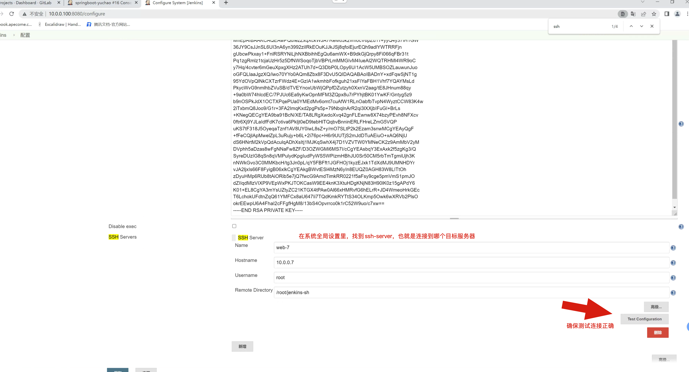
配置解释
公共配置：
Passphrase：不用设置
Path to key：key文件（私钥）的路径
Key：将私钥复制到这个框中
Hostname：需要连接ssh的主机名或ip地址（建议ip）
Username：用户名
Remote Directory： ssh服务，连接到目标机器的哪个目录
Name：随意起名代表这个服务，待会要根据它来选择
Author : www.yuchaoit.cn
高级配置：
Disable exec：禁止运行命令,这个不要勾选,否则没法执行命令
Use password authentication, or use a different key：可以替换公共配置（选中展开的就是公共配置的东西，这样做扩展性很好）
Port：端口（默认22）
Timeout (ms)：超时时间（毫秒）默认即可
配置完成后Test Configuration下,提示success的话就没问题。
4.创建Jenkins任务
4.1 新建任务
首页>新建>输入一个任务名称>构建一个maven项目
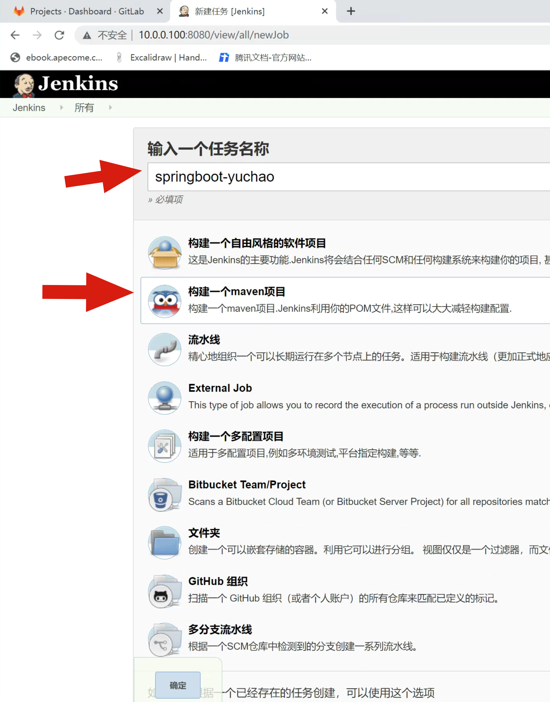
4.2 勾选丢弃旧的构建
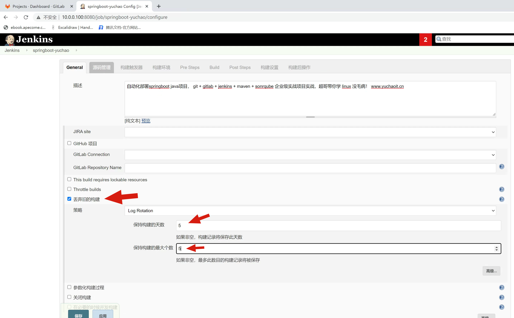
4.3 git源码管理
新建gitlab仓库
1.这里模拟java开发角色，上传代码到gitlab
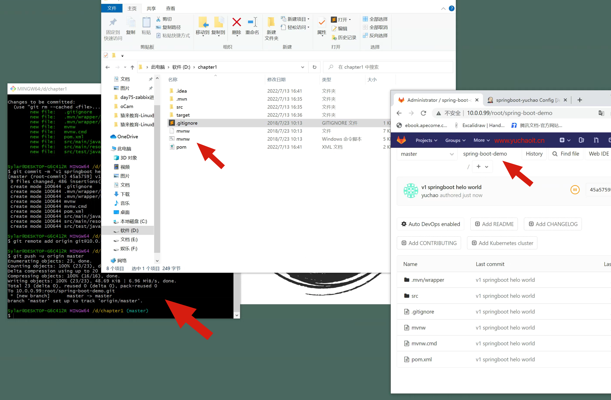
jenkins设置
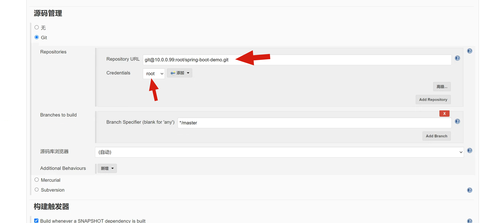
4.4 构建触发器webhook设置
先生成一个jenkins的触发器，当gitlab发生了push，就执行jenkins构建动作
http://10.0.0.100:8080/project/springboot-yuchao
再生成随机密钥令牌
9eeaf5ccdd6517e84b37d1482910fe44
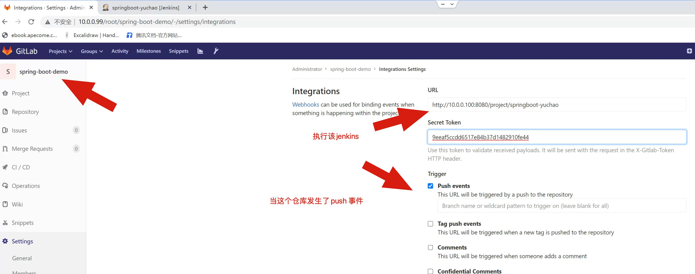
4.5 构建环境设置
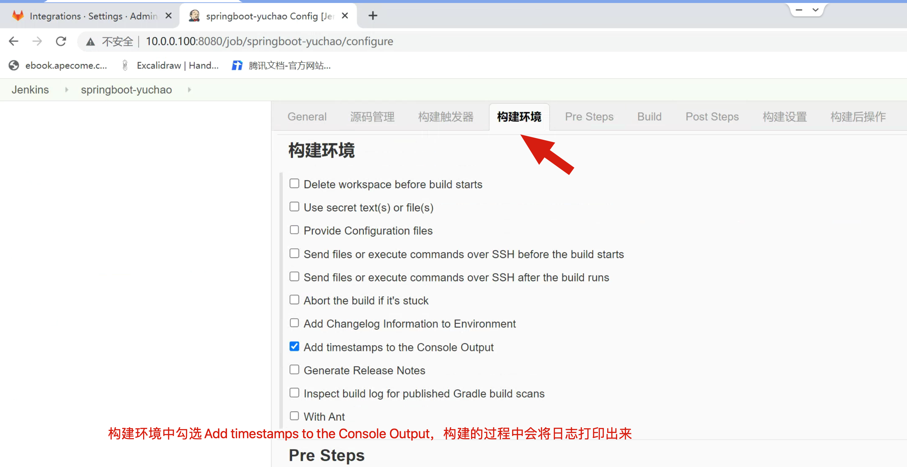
修改maven的build构建参数
在Build中输入打包前的mvn命令：clean install -Dmaven.test.skip=true
-Dmaven.test.skip=true表示跳过单元测试
4.5.1 体验maven打包
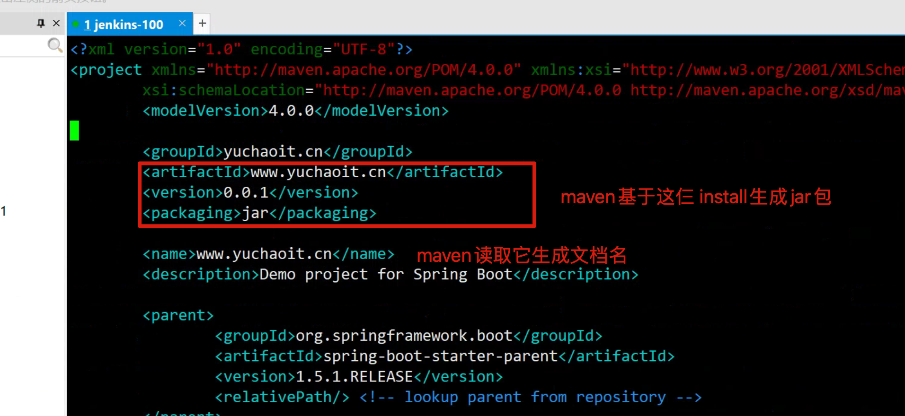
[INFO] Building jar: /tmp/chapter1/target/www.yuchaoit.cn-0.0.1.jar
[INFO]
[INFO] --- spring-boot-maven-plugin:1.5.1.RELEASE:repackage (default) @ www.yuchaoit.cn ---
[INFO]
[INFO] --- maven-install-plugin:2.5.2:install (default-install) @ www.yuchaoit.cn ---
[INFO] Installing /tmp/chapter1/target/www.yuchaoit.cn-0.0.1.jar to /root/.m2/repository/yuchaoit/cn/www.yuchaoit.cn/0.0.1/www.yuchaoit.cn-0.0.1.jar
[INFO] Installing /tmp/chapter1/pom.xml to /root/.m2/repository/yuchaoit/cn/www.yuchaoit.cn/0.0.1/www.yuchaoit.cn-0.0.1.pom
[INFO] ------------------------------------------------------------------------
[INFO] BUILD SUCCESS
[INFO] ------------------------------------------------------------------------
[INFO] Total time: 2.412 s
[INFO] Finished at: 2022-07-14T05:00:51+08:00
[INFO] Final Memory: 22M/273M
[INFO] ------------------------------------------------------------------------
[root@jenkins-100 /tmp/chapter1]#
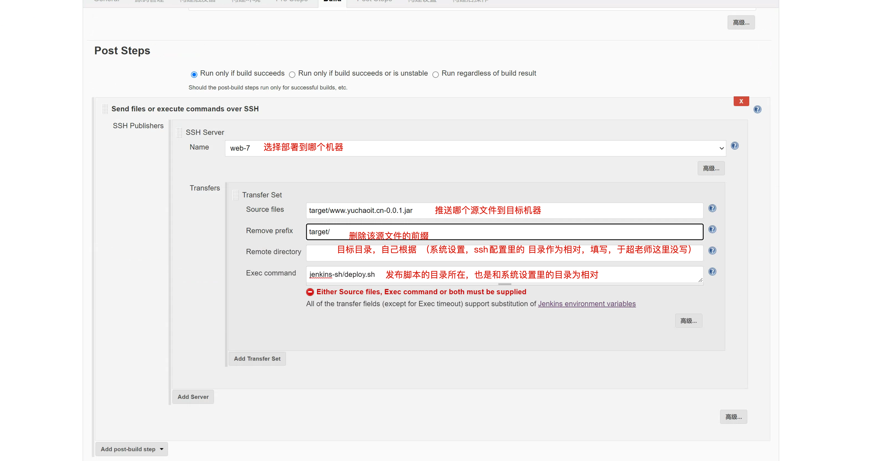
Source files配置：arget/person-0.0.1-SNAPSHOT.jar 项目jar包名
Remove prefix：target/
Remote directory：Jenkins-in/ 应用服务器的发送目录地址
Exec command：Jenkins-in/build.sh 应用服务器对应的shell脚本
4.6 钉钉设置
注意设置ip白名单
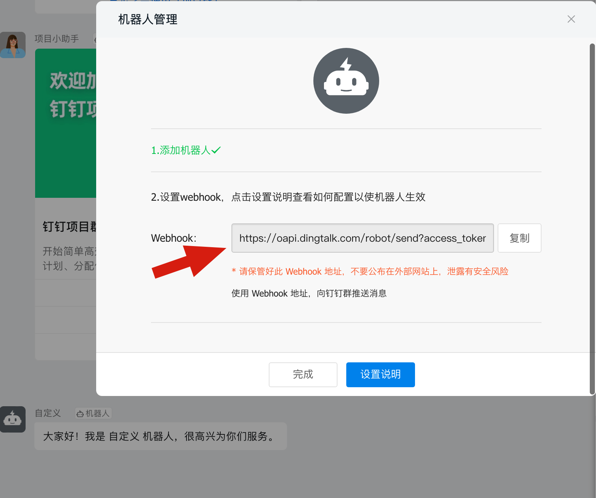
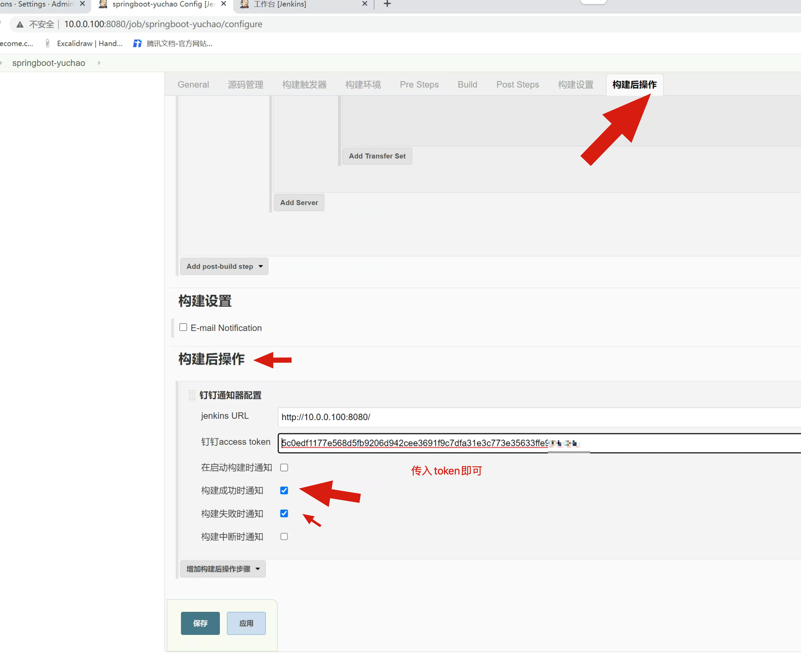
5.部署脚本开发
目标是在web-7 web-8机器上，实现java项目发布
去目标机器上创建好脚本，可以基于ansible发布
mkdir -p /root/jenkins-sh
touch /root/jenkins-sh/deploy.sh
cat > /root/jenkins-sh/deploy.sh <<'EOF'
#!/bin/bash
#格式化时间
DATE=$(date +%Y%m%d)
#设置程序目录
DIR=/usr/local/app
#设置Jar名称，也就是jenkins构建maven build后的产物
JARFILE=www.yuchaoit.cn-0.0.1.jar
#判断是否存在backp目录，如果不存储就创建
if [ ! -d $DIR/backup ];then
mkdir -p $DIR/backup
fi
cd $DIR
#杀掉当前运行的旧程序
ps -ef | grep $JARFILE | grep -v grep | awk '{print $2}' | xargs -i kill -9 {}
#备份旧程序
mv $JARFILE $DIR/backup/$JARFILE$DATE
#部署新程序
mv -f /root/jenkins-sh/target/$JARFILE .
echo "The service will be starting"
#后台启动程序并设置Jvm参数、开启JMX、打印GC日志
java -server -Xms1024M -Xmx1024M -XX:PermSize=256M \
-XX:MaxPermSize=256M -XX:+HeapDumpOnOutOfMemoryError -XX:+PrintGCDetails \
-Xloggc:./gc.log \
-Dcom.sun.management.jmxremote -Djava.rmi.server.hostname=127.0.0.1 \
-Dcom.sun.management.jmxremote.port=10086 -Dcom.sun.management.jmxremote.ssl=false \
-Dcom.sun.management.jmxremote.authenticate=false \
-Dserver.address=0.0.0.0 -Dserver.port=18888 \
-jar $JARFILE --spring.profiles.active=dev > /nohup 2>&1>out.log &
if [ $? = 0 ];then
sleep 30
tail -n 50 out.log
fi
# 进入备份目录，删除旧数据
cd backup/
ls -lt|awk 'NR>5{print $NF}'|xargs rm -rf
echo "starting success!!!"
EOF
这段shell脚本的大体意思就是，kill旧程序>删除旧程序>启动新程序>备份旧程序
注意添加执行权限
[root@web-7 ~/jenkins-sh]#chmod +x deploy.sh
6.点击立即构建
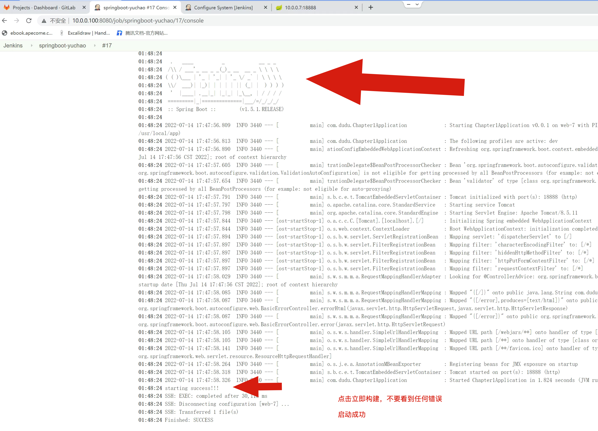
7.测试触发push钩子
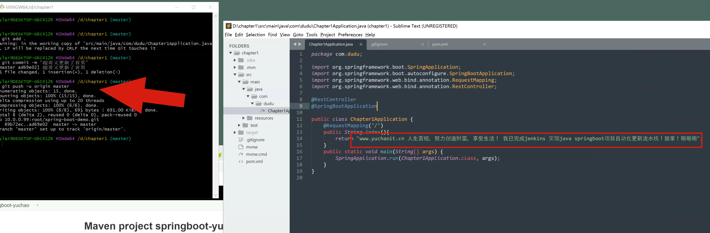
已经触发了构建任务
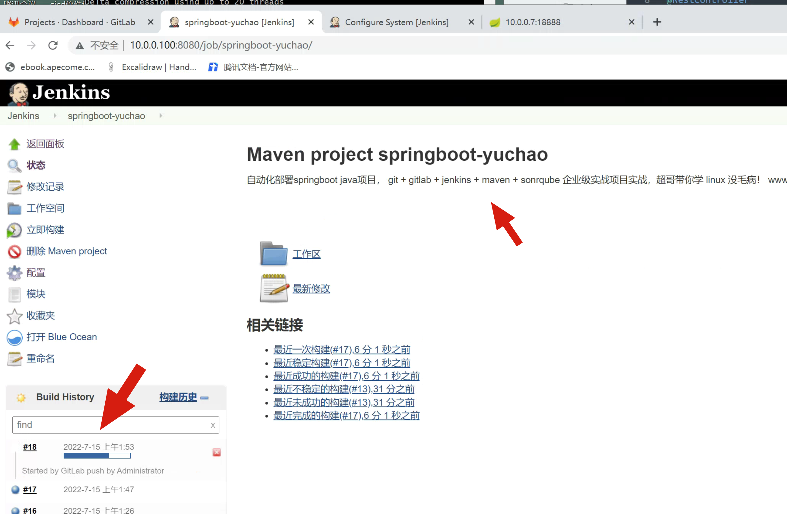
8.钉钉收到消息了吗
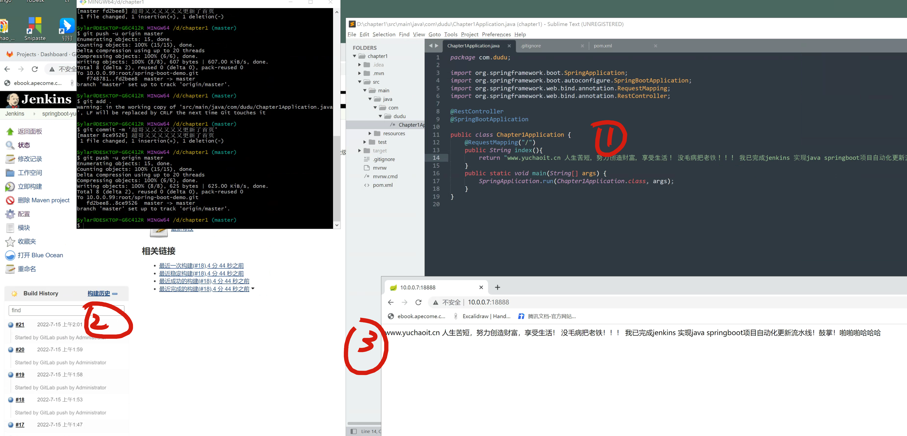
钉钉也看到消息了！！
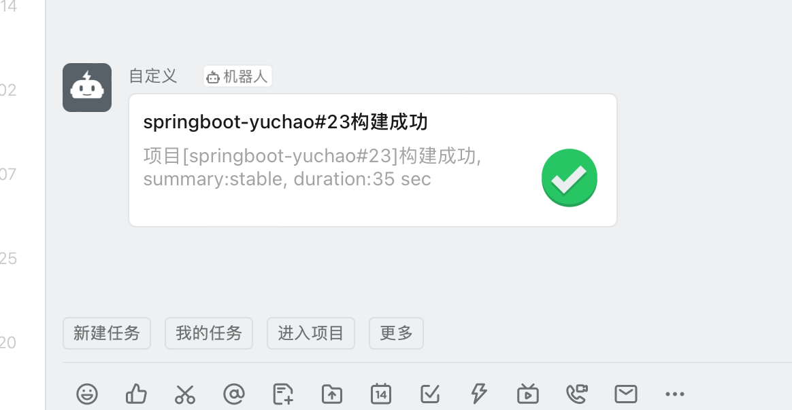
[root@web-7 /usr/local/app]#curl 127.0.0.1:18888
钉钉也收到消息了！!!!！www.yuchaoit.cn 人生苦短，努力创造财富，享受生活！ 没毛病把老铁！！！ 我已完成jenkins 实现java springboot项目自动化更新流水线！鼓掌！啪啪啪哈哈哈